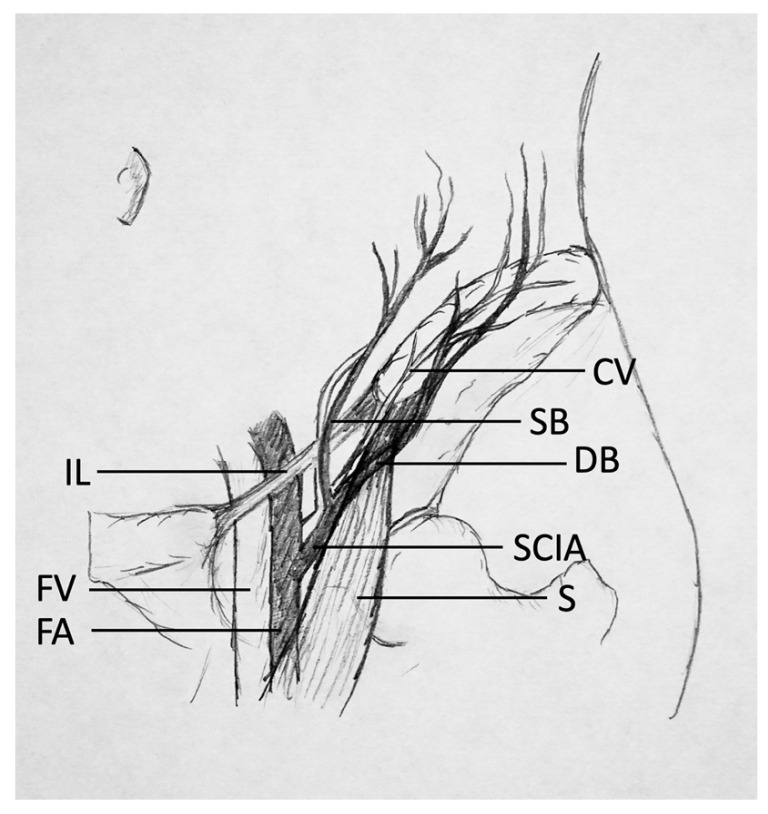
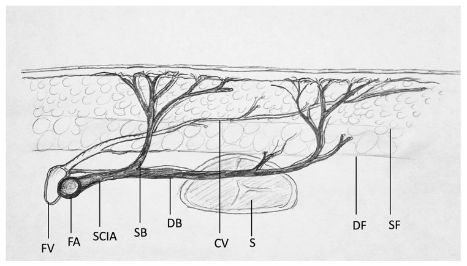

下腹部・鼠径部（そけいぶ＝脚のつけ根）の皮膚を、浅腸骨回旋動脈（せんちょうこつかいせんどうみゃく）という1本の決まった血管を軸にして挙げる「鼠径皮弁（そけいひべん）」を報告した論文です。それまでの皮弁は「細長くすると先が壊死する」という長さ幅比の制約に縛られていましたが、はっきりした血管の軸を持たせればその制約から自由になる ― この軸走型皮弁（じくそうがたひべん＝axial pattern flap）の考え方を世に示した記念碑的な報告として知られます。
背景 ― 皮弁は「長さ幅比」に縛られていた
皮弁（ひべん＝血流を保ったまま移動させる皮膚のかたまり）は、それまで主に無作為型皮弁（むさくいがたひべん＝random pattern flap）として挙げられていました。これは決まった動脈を含まず、真皮下血管叢（しんぴかけっかんそう＝皮膚のすぐ裏に網の目状に張りめぐらされた細い血管のネットワーク）だけを頼りに血液を届ける皮弁です。
この方式には大きな弱点がありました。つけ根から遠ざかるほど血液が届きにくくなるため、皮弁を細長くすると先端が壊死（えし＝血流が絶えて組織が死ぬこと）してしまうのです。そのため無作為型皮弁は、ふつう長さを幅の2〜3倍程度までしか伸ばせないとされます。大きな欠損を遠くへ運ぶには、皮弁をいくつも継ぎ足して何回にも分けて歩かせる（waltzing）ような、時間のかかる手順が必要でした。
著者らはこれに先立ち、デルトペクトラル皮弁（前胸部の皮弁）の血行を研究しており、「動脈と静脈がはっきりした軸をなして走り、自前の血流をもつ皮膚の領域」を探していたとされます。その延長線上で見いだされたのが鼠径部でした。
この論文がしたこと
McGregor と Jackson は、鼠径部の皮膚が浅腸骨回旋動脈（superficial circumflex iliac artery, SCIA＝大腿動脈から分かれ、脚のつけ根を外側へ走る細い動脈）とその伴走静脈によって、まとまった一つの血管領域として養われていることに着目しました。
そして、この動静脈を軸として鼠径部の皮膚を細長い有茎皮弁（ゆうけいひべん＝血管の茎でつながったまま移す皮弁）として挙げ、手の欠損の被覆に用いる術式を報告しました。原理としては先行するデルトペクトラル皮弁と同じ考え方を、浅腸骨回旋動静脈系に当てはめたものと整理されています。
重要なのは、この皮弁が「たまたま生き延びた細長い皮弁」ではなく、はっきりした1本の血管軸を内蔵しているからこそ細長くできる、という点です。血管の軸が皮弁の長軸方向に走っていれば、その血管が届く範囲は長さ幅比とは無関係に生存する ― この発想が軸走型皮弁の概念につながりました。
なお「軸走型（axial pattern）」「無作為型（random pattern）」という用語そのものを正面から定義し、皮弁を二分する分類として提示したのは、翌年の McGregor & Morgan「Axial and random pattern flaps」（Br J Plast Surg. 1973;26(3):202–213）です。本論文はその概念を実際の皮弁として具体化してみせた原著にあたります。
解剖と手技の要点
皮弁の栄養血管である浅腸骨回旋動脈は、鼠径靭帯（そけいじんたい＝脚のつけ根を横切る丈夫な靭帯）のおよそ2〜3cm下方で大腿動脈から分岐し（約7割は大腿動脈から直接、残りは浅下腹壁動脈と共通の幹から分かれるとされます）、鼠径靭帯とほぼ平行に、上前腸骨棘（じょうぜんちょうこつきょく＝腰骨の前方の出っぱり）へ向かって外側へ走ります。
この動脈の走行がそのまま皮弁の長軸になります。動脈は皮下の層を進みながら皮膚へ向かって枝を立ち上げ、その途上の皮膚をまとめて養うため、細長い皮弁を安全に挙げられます。一方、上前腸骨棘より外側の領域には決まった血管軸がなく無作為型の血行になるとされ、皮弁をどこまで伸ばせるかの目安になります。
臨床では、皮弁を挙げて手や前腕の欠損にあてがい、患肢を鼠径部につないだ状態で数週間過ごしてもらいます。茎（けい＝つけ根の部分）を筒状に縫っておくと創が管理しやすく、手首や手の運動を早期に始めやすいとされます。移した皮弁が周囲から血流を得たころ合いで茎を切り離しますが、現在の報告では3週前後で切離することが多いとされています（原著がどの時期を推奨したかは、本稿では確認できていません）。
供部（きょうぶ＝皮膚を採ったあと）は直接縫い縮められるのが利点です。多くの患者で一次縫縮できる幅はおよそ10cmまでとされ、傷あとが下着に隠れる位置に収まることも大きな魅力とされています。


結果
1972年の British Journal of Plastic Surgery は抄録（要旨）を付けない時代の雑誌で、この論文にも抄録がありません（PubMedでも「No abstract available」と表示されます）。原著本文も出版社の有料公開のため、本稿では原著が報告した症例数・生着率といった具体的な数値は確認できていません。ここでは確認できた範囲にとどめます。
確かなのは、この鼠径皮弁が発表後すみやかに普及したことです。大きな皮弁が採れること、そして供部の傷あとを衣類で隠せることが受け入れられ、手・手関節・前腕の軟部組織欠損を覆う信頼性の高い皮弁として定着したとされます。
現在でも、遊離皮弁（顕微鏡下に血管を縫い直して移す皮弁）が使えない状況や、血管の状態が悪い外傷例などで、確実に血流が読める有茎皮弁として用いられています。
意義 ― なぜ記念碑的なのか
この論文の核心は、個々の術式そのものよりも、それが示した原理にあります。「はっきりした血管の軸を持つ皮弁（軸走型）」と「持たない皮弁（無作為型）」は別物であり、前者は長さ幅比という古い経験則に縛られない ― この理解が、皮弁の設計を経験と勘から血管解剖に基づく設計へと変えました。翌1973年の McGregor & Morgan による「Axial and random pattern flaps」で、この二分法は正式な分類として提示されます。
さらに、決まった動静脈を茎とする皮弁であることは、そのまま「その血管を切って別の場所の血管につなぎ直せる」ことを意味します。鼠径皮弁は間もなく遊離皮弁として移植され、マイクロサージャリー時代への橋渡しとなりました（Daniel & Taylor, 1973）。ただし、この史上初の遊離皮弁で実際に吻合に用いられた血管は、浅腸骨回旋動脈が細すぎたため浅下腹壁動脈（SIEA）であったと、近年あらためて整理されています。
鼠径部の皮膚を養う血管への理解はその後も深まり、浅腸骨回旋動脈の穿通枝（せんつうし＝皮膚へ立ち上がる細い枝）1本で薄い皮弁を挙げるSCIP皮弁（Koshima, 2004）へと発展しました。血管軸に着目するという本論文の視点は、現代の穿通枝皮弁にまでまっすぐつながっています。
この論文の要点
- 鼠径部の皮膚を、浅腸骨回旋動静脈という決まった血管の軸をもとに挙げる有茎皮弁を報告した原著。
- はっきりした血管軸を内蔵するため、無作為型皮弁の「長さは幅の2〜3倍まで」という長さ幅比の制約から自由になれることを示した＝軸走型皮弁（axial pattern flap）の概念を具体化した。
- 浅腸骨回旋動脈は鼠径靭帯の約2〜3cm下方で大腿動脈から分岐し、鼠径靭帯と平行に上前腸骨棘へ向かって走る。この走行が皮弁の長軸になる。
- 供部を直接縫い縮められ（一次縫縮できる幅はおよそ10cmまでとされる）、傷あとが衣類に隠れることから急速に普及し、手・前腕再建の信頼できる皮弁となった。
- 「軸走型」「無作為型」という用語を分類として正式に提示したのは翌年の McGregor & Morgan（1973）。本論文はその概念を実際の皮弁で示した原著にあたる。
- 決まった血管を茎とする皮弁であったため、間もなく遊離皮弁として移植され（Daniel & Taylor, 1973）、マイクロサージャリー時代への橋渡しとなった。
用語ミニ辞典
- 軸走型皮弁（axial pattern flap）
- 決まった1本の動脈（と伴走静脈）が皮弁の長軸に沿って走り、自前の血流をもつ皮弁。長さ幅比の制約を受けにくく、細長く挙げられる。
- 無作為型皮弁（random pattern flap）
- 決まった動脈を含まず、真皮下血管叢だけで血液を得る皮弁。ふつう長さは幅の2〜3倍程度までとされる。
- 長さ幅比
- 皮弁の長さと、つけ根の幅の比。無作為型皮弁ではこの比を大きくしすぎると先端が壊死するため、設計上の制約になっていた。
- 浅腸骨回旋動脈（SCIA）
- 大腿動脈から分かれ、鼠径靭帯と平行に上前腸骨棘へ向かって外側へ走る細い動脈。鼠径皮弁の栄養血管。
- 鼠径靭帯
- 脚のつけ根を斜めに横切る丈夫な靭帯。浅腸骨回旋動脈の位置を探すときの目印になる。
- 上前腸骨棘（ASIS）
- 腰骨（腸骨）の前方にある出っぱり。浅腸骨回旋動脈が向かう先で、皮弁の軸走部分の目安になる。
- 有茎皮弁 / 遊離皮弁
- 有茎皮弁は血管の茎でつながったまま移す皮弁。遊離皮弁は血管ごと切り離し、顕微鏡下で別の血管に縫い直す皮弁。
- 供部（きょうぶ）
- 皮弁を採取したあとの部位。鼠径皮弁では直接縫い縮められ、傷あとが衣類に隠れる点が利点とされる。
- 真皮下血管叢
- 皮膚のすぐ裏に網の目状に張りめぐらされた細い血管のネットワーク。無作為型皮弁はこれだけを頼りに血液を得る。
- SCIP皮弁
- 浅腸骨回旋動脈の穿通枝1本を頼りに薄く挙げる後年の皮弁（Koshima, 2004）。鼠径皮弁の血管解剖の理解が深まった延長線上にある。
本ページは形成外科の学習・参照を目的とした編集部によるオリジナルの日本語解説で、原著（英語）の逐語訳・全文転載ではありません。正確な内容・数値・図は必ず上記リンク先の原著をご確認ください。
掲載している図は、原著の図ではありません。原著の図は出版社が著作権を持ち転載できないため、同じ術式・同じ解剖を扱った無料公開（オープンアクセス／CC BY）論文の図を、出典とライセンスを明記して引用しています。